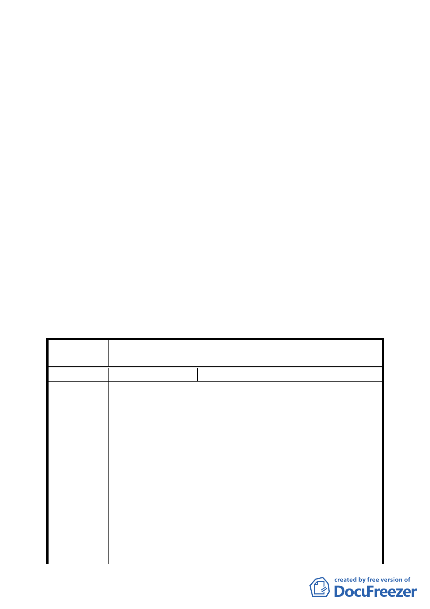

說明：
一、本案係市府 95 年 8 月 30 日以府都規字第 09533642600 號函
送到會，並自 95 年 8 月 31 日起公開展覽三十天。
二、法令依據：都市計畫法第 22 條、24 條
三、申請單位：臺北市南港區新光段自辦市地重劃籌備會
四、計畫範圍：詳計畫圖所示。
五、變更理由及內容：詳計畫說明書所示。
六、說明會日期：95 年 9 月 12 日
七、公民或團體陳情意見：如綜理表
決議：
一、本案為保障小地主權益，最小基地建築面積訂為 200 平方公
尺，未來並請地政處監督重劃會妥善配地以保障小地主權
益。其餘依說明書內容通過。
二、公民或團體所提意見審決如后附綜理表。
臺北市都市計畫委員會公民或團體所提意見綜理表
案
名
修訂臺北市南港區新光段 2 小段 27-2 等地號 15 筆土地細部
計畫案
編 號 １ 陳情人 周興
1. 新光段二小段地號 26 地號土地持分人數因買賣登記 95 年
5 月 22 日 2.6 坪土地分 0.1 坪辦給 26 人，出賣人卻未依
相關法令規定以書面通知我，明顯偽造文書，本人周興有
優先購買權。
2. 鄰地：27-2、25-1 號為國有土地，周德松共 7 人佔用國有
土地沒有承租。
陳情理由
3. 新光二小段 26 地號土地，土地增加持份人數完成登記，但
土地地上物為違建，不能講成具有物權效力。
4. 市地重劃實施辦法第 44 條：主管機關得經其相鄰土地所有
權人之同意合併為共有，但設有他項權力者應徵得他項權
利人之同意，但本人周興不同意，因為 452：452-4；28
土地有向銀行借款故不同意合併。
5. 計畫圖上沒有畫一條線區分建築規模的限制線，也沒有畫
8 米計畫道路，土地也沒有編號出來，本人不同意。
二